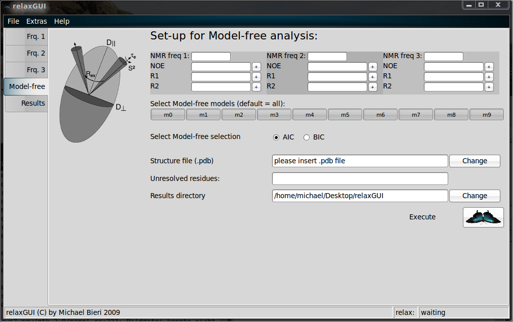
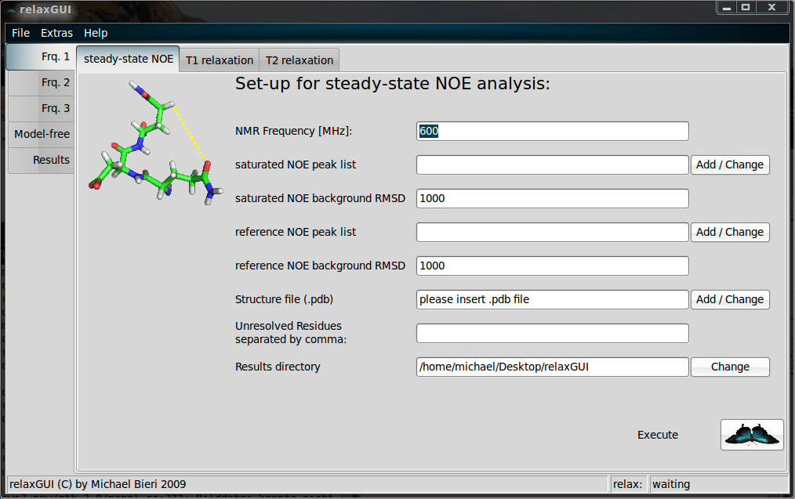
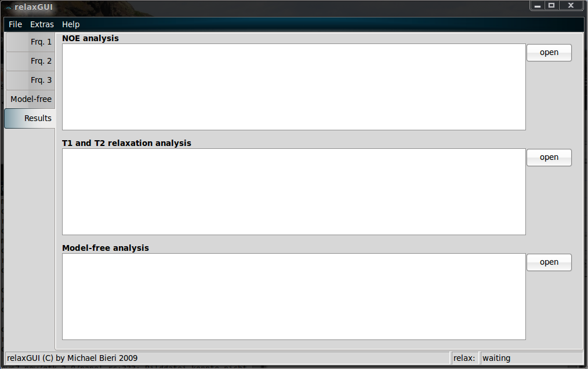
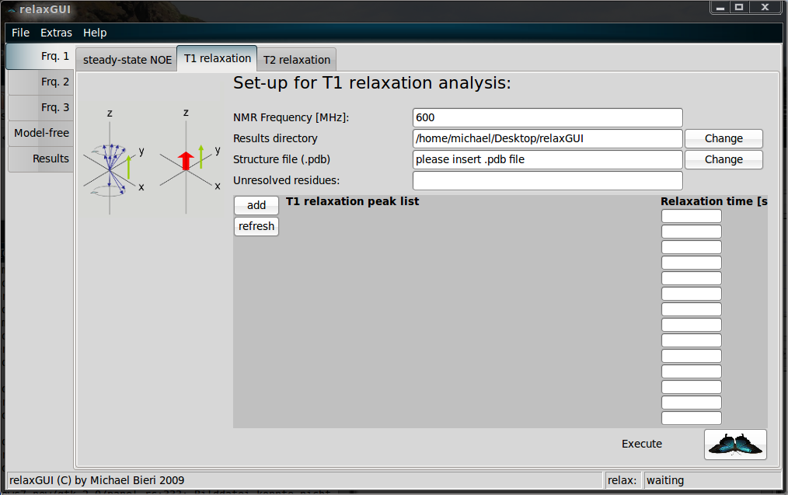

Hi
I wrote a graphical user interface for relax and Edward suggested to
discuss this in here. Attached are screen shots of the program.
It is designed to enable simple model-free analysis by drag-and-drop or
browsing of the peak files. It works with up to three different magnetic
fields. Results generated by relaxGUI are listed in a separate tab and
can be observed. Furthermore, relaxGUI gives a feedback if the relax run
was successful or not. Model-free calculation can be executed either
active or in the background.
The program actually creates and runs scripts in relax. I tested it on
Ubuntu 9.10 using relax 1.3.4. The program is written in python and uses
wx.Python for the GUI.
As told by Edward, the program will be uploaded as a task.
Cheers
Michael
--
Michael Bieri, PhD
Department of Biochemistry and Molecular Biology
Bio21 Molecular Science and Biotechnology Institute
The University of Melbourne, 30 Flemington Road
Parkville, Victoria 3010, Australia
Tel.: +61 3 8334 2256
http://www.biochemistry.unimelb.edu.au




{kind=link}
{kind=link}
{kind=link}
{kind=link}